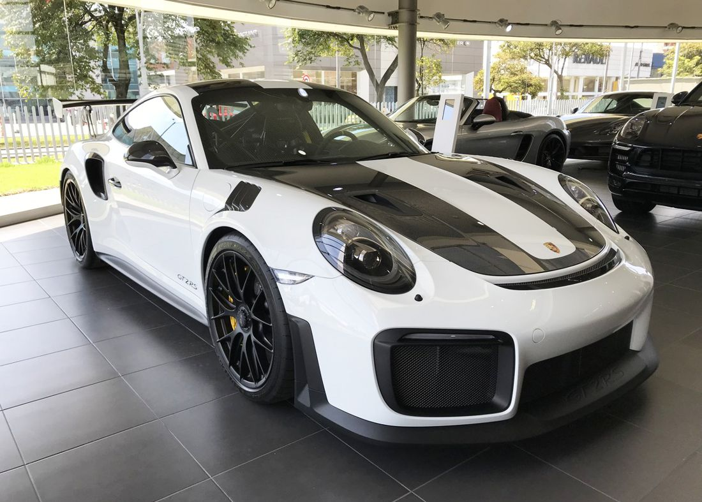
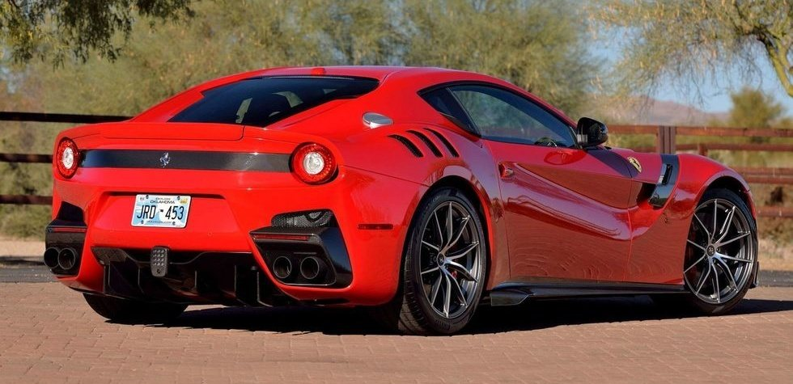

Porsche
Marca alemana que produce autos antes de la primera guerra mundial

El GT2 RS es un auto de carreras homolagado para la calle.
Se lo puede identificar por su notorio alerón,
pero no se lo tiene que confundir con su hermano el GT3RS el cual posee un motor aspirado.
Mclaren
Marca inglesa que produce autos rapidos pero no de tan buena calidad

El 765lt es un auto muy rapido de 8 cilindros en V que tiende a incendiarse.
Se lo puede identificar por su frente imponente que parece que no tenga ópticas, es
el hermano mayor de el 720S.
Ferrari
Marca italiana con una gran historia en su mochila

La f12 TDF es un auto Gran Tursimo, un hibrido entre la calle y la pista.
Su sonido armonioso se lo puede identificar a lo lejos.
Las siglas TDF hacen referencias al Tour De France